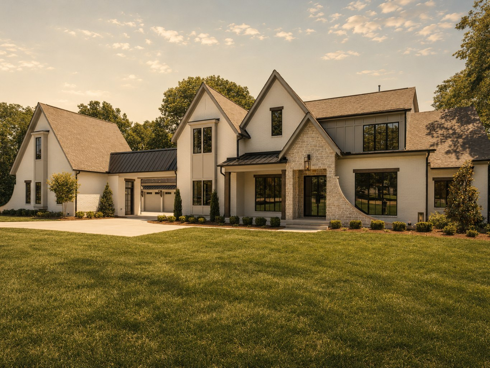

Luxury Development
Anna
Anna
Brentwood, Tennessee
Gated · about 28 acres · homesites under an acre
Ask Us About Anna
Gated · about 28 acres · homesites under an acre
Ask Us About AnnaAnna Drive, Anna Road and McCall Court, Brentwood, Williamson County — at Franklin Road and Concord Road. Gated. Reported at twenty-eight acres, from a single 2023 source and from no page of the developer’s own.
One agent site places Anna off Old Smyrna Road. The MLS driving directions put it at Concord Road, and we think that site confused Anna with Harlan, which is on Old Smyrna. The name is also spelled Anna, not Anne, on every record including the developer’s own.
RealTracs MLS, 7091 Anna Drive and 1101 McCall Court; annabygrovepark.com
Grove Park is the land developer. The houses are built by Hidden Valley Homes and Tennessee Valley Homes — not by Grove Park itself, which is the case only in Callie.
The lot count is genuinely unsettled: seventeen, twenty and sixteen all appear in print, two of them on the same page of the same site. Observed lot sizes are 0.72 and 0.80 acres, with a reported range of about 0.46 to 0.77. Dues are $450 a month.
annabygrovepark.com; RealTracs MLS; new-home portals, observed 17 October 2026
Design standards reported in 2023 include a minimum of 5,500 square feet, five bedrooms and five baths, a four-car garage, metal, slate or cedar roofs, a pool on every residence, scullery kitchens, and an eight-person architectural review committee led by Pfeffer Torode.
That is journalism from 2023, not a recorded covenant. If those standards matter to your plans, read the recorded CC&Rs before you rely on them. Floor plans are reported at roughly 7,500 to 8,700 square feet, all brick, partial brick with stone, or fiber cement with brick accents.
Tennbeat, 27 July 2023 — reporting, not a covenant document
| Property | Price | Status |
|---|---|---|
| 1101 McCall Ct — built 2025 | $6,999,000 | active under contract, MLS data 3 August 2026 |
| 7091 Anna Dr — built 2026 | $6,749,000 | pending, MLS data 17 October 2026 |
| One closed home — $720 a square foot | $6,279,156 | closed |
Lots at $2–3 million and finished residences at $4–8 million are two different products. A third source says homes start at $6.5 million. The MLS record sits at the top of all of it, between $6.25 and $7.0 million.
One analysis says there is a single closed Anna sale on record and then lists a second, at $5.8 million on McCall Court, in the same article. We flag it rather than pick.
The total lot count, the twenty-eight acres, the current recorded covenants, the plat year, and whether lots are still available from the developer or only by resale. We will pull the plat and the CC&Rs from the Williamson County Register of Deeds for you.
RealTracs MLS via Compass and listing portals, observed 17 October 2026; closed-lot figures from a brokerage analysis dated 28 April 2026.
A Williamson County new-construction brief listed Anna as selling with figures as at June and July 2026.
Hidden Valley Homes and Tennessee Valley Homes hold the homesites. What reaches the open market understates what is obtainable.
In a community of seventeen to twenty houses, the difference between buying well and not buying at all is usually a phone call made early.
Gated entry, sidewalks and underground utilities. That is what the MLS association-amenity field records, and it is the whole of it.
No pool, clubhouse, trails or amenity center exists, and none is published as planned. One analysis records amenities as “none shared among residents.”
“Total wellness” and “a beautifully woven fabric of community” appear on the developer’s site. They are not amenities, and we are not going to list them as though they were. What you are buying is a gate, three quarters of an acre and the design standard.
RealTracs MLS association-amenity fields, 1101 McCall Court, observed 17 October 2026.
On the MLS school field for 7091 Anna Drive, and marked assigned on neighboring Harlan parcels. 0.8 miles.
1.6 miles.
1.4 miles.
Zoning per MLS, October 2026. Corroborated indirectly: the City of Brentwood’s 2021 staff analysis for this immediate area projected students into the same three schools. We could not check it against a live Williamson County Schools zone map, and one portal warns the community may not fall within these attendance zones — confirm with the district.
164 acres of sports fields and nature trails with the Eddy Arnold Amphitheater.
A nature preserve on Brentwood’s western edge, with guided hikes and conservation programs.
Historic sites owned by the City of Brentwood, including the 1830s Boiling Spring Academy.
Fine dining in a historic Maryland Farms house — steaks and seafood.
The retail and restaurant center, a few minutes north.
The Brentwood bakery and tea room, named by the county’s visitor bureau.
Private, on Country Club Drive. Gary Roger Baird, 6,482 yards.
Private, on Concord Road. Arnold Palmer Signature Design, par 72.
Private and family-owned, Bruce Devlin and Robert von Hagge, 1971.
The MLS directions: south on I-65, exit 71 toward Brentwood, right onto Concord Road, then a private drive leading to Anna Road and Anna Drive.
The developer says less than three miles to premier shopping and a short hop to I-65. We are repeating that as their claim.
The figures circulating for Brentwood are measured from the city centroid by an undated agent blog. Tell us your commute and we will measure it properly from the entrance.
Everything on this page is sourced and dated, and where the record is thin or the sources disagree we have said so rather than smoothed it over. Before you write an offer in Anna we will pull the recorded plat, the covenants and the current school zoning for the specific lot, and run door-to-door drive times from the actual entrance.
Call (615) 723-4844 or send us a note. We represent buyers here; the on-site sales office represents the developer.
If you already own here, our seller program and marketing pages set out how we take a house in a community this small to market without leaning on the developer’s own list.